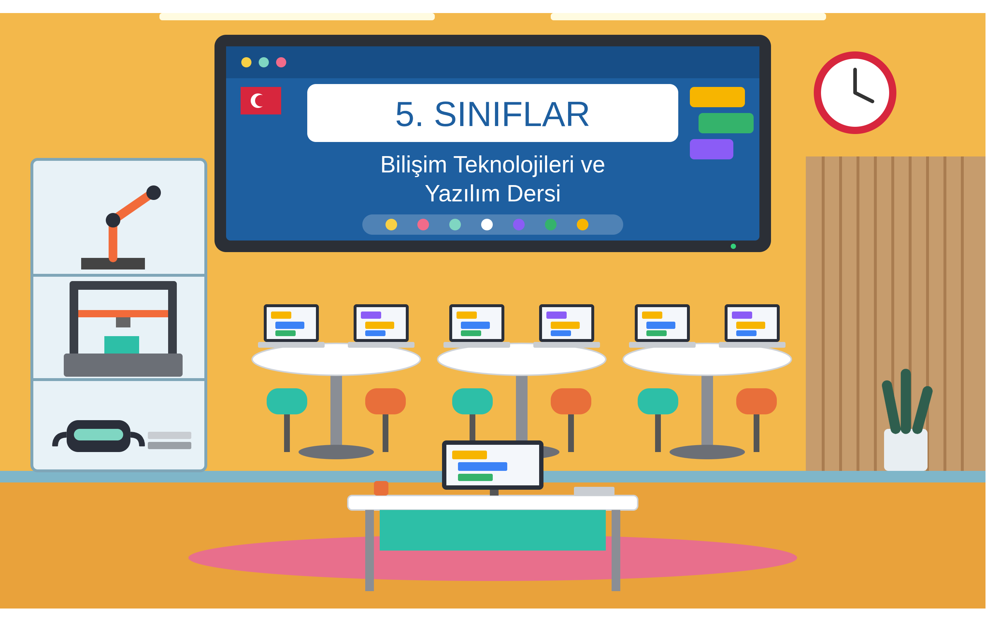
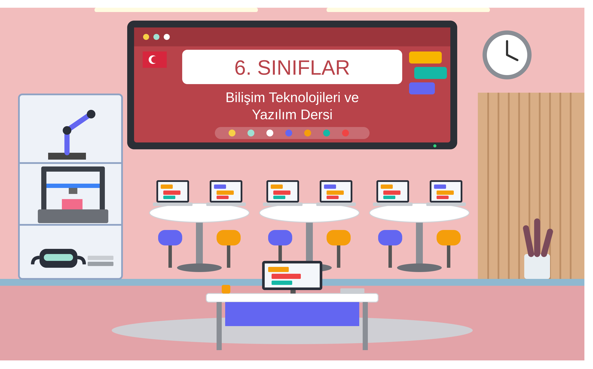

Son Eklenenler

5. Sınıf5. Sınıf Bilişim Teknolojileri
Temel bilişim kavramları, dijital vatandaşlık, dosya yönetimi ve Scratch ile görsel kodlama dünyası.

6. Sınıf6. Sınıf Bilişim Teknolojileri
Tablolama (Calc/Excel), ses-video kurgu, ağ teknolojileri ve Python ile metin tabanlı kodlama.